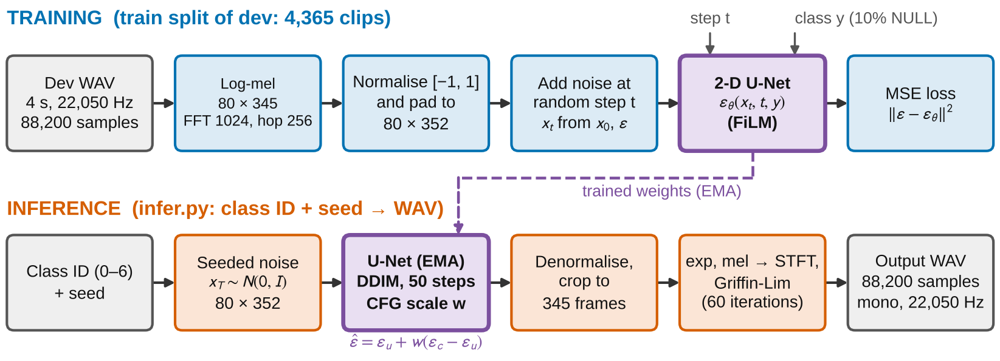
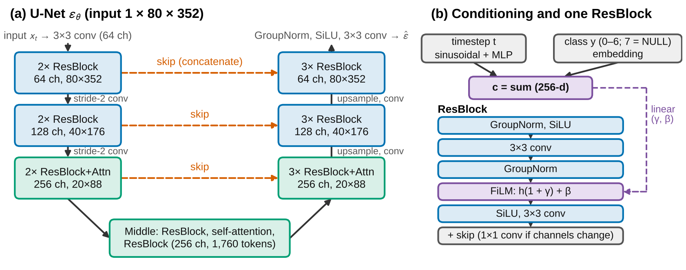
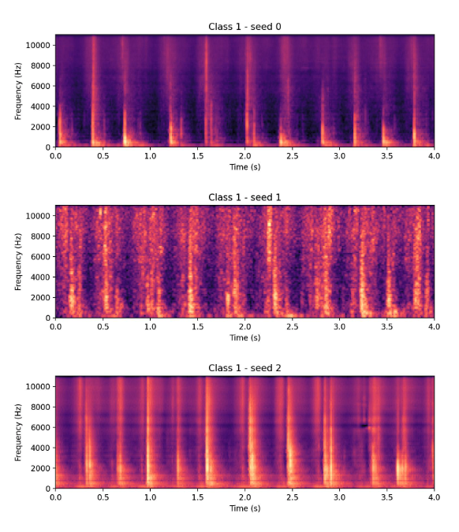

.png)
Foley sounds are human-made sound
effects that enhance the viewing experience of visual media [1]. The
DCASE 2023 Task 7 challenge was organised to promote research on
synthesising them with generative models, and its submissions showed
promising results [1]. Chung et al. later introduced T-Foley, which
generates Foley sound synchronised to temporal events [2]. This project
tackles the basic task at small scale: given a class ID (seven
categories) and a random seed, generate a four-second, 22,050 Hz mono
sound that fits the class, changes with the seed and does not copy a
training clip, with a model light enough for one GPU.
A class-conditional diffusion model is trained on 80 × 345 log-mel
spectrograms [3] of the DCASE 2023 development data. A 2-D U-Net [4]
with 16.432 M parameters, conditioned on the class and diffusion step
through FiLM layers [5], predicts the added noise. Sounds are sampled
with 50-step DDIM [6] and classifier-free guidance [7], and waveforms
are reconstructed by a seeded Griffin-Lim algorithm [8]. Training took
roughly 9–10 hours on one Colab T4 GPU, without pretrained models. Plain
conditional sampling (baseline, guidance scale
)
is compared with guided sampling (modification,
)
on the same weights and seeds.
Evaluation is subjective and uses the three criteria of the DCASE 2023
challenge [1]: perceptual audio quality, fit-to-category and diversity,
judged by listening to the submitted demonstration files.
Fit-to-category is moderate-high and diversity across seeds is high, but
audio quality is poor: sounds are often metallic and buzzy. Griffin-Lim
phase reconstruction is the suspected cause, although no ablation with a
neural vocoder was run. Comparisons of the baseline to guided sampling
showed improvement in diversity and fit, but not audio
quality.
DiffWave is a non-autoregressive diffusion model that converts white noise into a waveform through a Markov chain with a fixed number of steps. A single noise-prediction loss trains it without a discriminator, and it handles mel-conditioned vocoding, class-conditional and unconditional generation [9]. Its 2.64 M-parameter dilated-convolution network outperformed autoregressive and GAN-based waveform models; class-conditionally it reached 91.2% classifier accuracy against 56.2% and 60.7% for two WaveNet variants, with labels added as an embedding bias in each residual layer [9]. Training needed 1 M steps on eight GPUs, and the authors note that spectrograms are easier to generate than waveforms because they are far shorter [9]. This project adopts the noise-prediction objective, linear noise schedule, label-embedding idea, mel settings (FFT 1024, hop 256, window 1024) and learning rate (), but not waveform-domain modelling, which is too costly for 88,200 samples per clip on one GPU.
T-Foley is a waveform-domain diffusion model conditioned on the sound class and a frame-wise RMS event feature injected by Block-FiLM, and it produces Foley sound well synchronised with the target events [2]. It is trained on the same DCASE 2023 dataset (95%/5% split, 500 epochs), with conditions dropped with probability 0.1 to enable classifier-free guidance; its best variant has 74 M parameters [2]. The authors separate transient, event-based sounds from continuous ones, noting that rain and sneeze lack definite onsets [2]. This project takes the dataset framing, FiLM conditioning on class and timestep, 10% condition dropout with guidance, and the transient/continuous distinction (used to pick the class for the seed comparison). It omits temporal conditioning, the waveform-domain network (about 4.5 times larger) and the FAD and 23-listener evaluation.
The challenge report defines three subjective criteria: perceptual audio quality (clarity, free from artefacts, fuzziness, degradation, distortion and noise), fit-to-category (the degree to which a sound is recognised as the intended category) and diversity (the ability to produce a diverse set of sounds). Objective evaluation uses the Fréchet Audio Distance (FAD, lower is better) [1]. The two did not align completely, but in aggregate low-FAD systems tended to score well on all three subjective criteria [1]. The best-performing systems used a sequence of diffusion models for spectrogram generation and HiFi-GAN for phase reconstruction [1]. This project adopts the three criteria as its listening vocabulary and the result as evidence that spectrogram diffusion suits this dataset, but not HiFi-GAN (an extra training stage) or FAD.
FiLM applies a per-channel scale and shift predicted from a conditioning input [5] and conditions the U-Nets of T-Foley and AudioLDM [2], [10]. AudioLDM shows that latent diffusion on a compressed mel-spectrogram representation plus a HiFi-GAN vocoder can be trained on one GPU; its DDIM quality improves with step count and flattens near 100 steps (FD 35.71 at 50, 29.48 at 200), and guidance scale 3 gave its best FD and KL, with guidance trading quality against diversity [10]. Diffsound also generates mel-spectrogram tokens with discrete diffusion and a separate vocoder, with better MOS than an autoregressive decoder (3.56 vs 2.786) and about five times faster generation [11]. These results motivate 50 DDIM steps, a guidance scale near 3 and the baseline-versus-guidance comparison.
Three decisions follow. Diffusion is applied to spectrograms, not waveforms, for compute reasons [9] and because it performed well in the challenge [1]. Griffin-Lim replaces a trained neural vocoder, a further sequential training stage that one GPU and four days rule out, at an expected cost in audio quality. FAD is not computed, because it relies on pretrained audio classifiers such as VGGish or PANNs [2]; listening replaces it.
Figure 1 shows the pipeline. Training learns to predict the noise added to normalised log-mel spectrograms of the training clips; inference denoises seeded noise into a spectrogram and converts it to a four-second waveform.

Audio is mono, 22,050 Hz and padded or cropped to 88,200 samples. A mel spectrogram is the short-time Fourier transform magnitude projected onto a mel filterbank, whose bands follow the ear’s roughly logarithmic frequency resolution and reduce 513 linear bins to 80. A log-mel spectrogram also takes the logarithm of those magnitudes. Magnitudes span several orders of magnitude, with most energy in a few loud bins; the logarithm compresses them into a bounded range closer to perceived loudness, which suits a diffusion model that adds Gaussian noise at a fixed scale (a design rationale, not tested here). Magnitude compression was also the one preprocessing step found not to be redundant for deep networks in [3]. Natural-log magnitudes are used, with FFT and window 1024, hop 256, 80 bands and an upper frequency of 11,025 Hz, giving 80 × 345 frames. Values are clipped to the 0.1st–99.9th percentile of the training log-mels, scaled to and padded with to 352 frames so that three downsampling steps divide evenly.
To return to audio, a sample is denormalised, cropped to 345 frames, exponentiated and mapped to linear frequency with the pseudo-inverse of the mel filterbank in librosa [12]. Griffin-Lim [8] then estimates the missing phase over 60 seeded iterations. The result is trimmed to 88,200 samples and peak-normalised to 0.9, so absolute loudness differences between clips are not preserved.
The network treats the spectrogram as a one-channel image and is a 2-D U-Net [4] (Figure 2) with three levels of 64, 128 and 256 channels at 80 × 352, 40 × 176 and 20 × 88 resolution. The encoder has two residual blocks per level with stride-2 convolutions; the decoder has three per level (the extra block consumes a skip connection) and upsamples by nearest-neighbour interpolation and a convolution. Each block applies GroupNorm, SiLU and a 3 × 3 convolution, then GroupNorm, FiLM modulation [5], SiLU and a second convolution, plus a residual connection. Self-attention is used only at the lowest resolution and in the middle block (1,760 positions). The conditioning vector, an MLP of the sinusoidal timestep embedding plus a learned class embedding (256-d; seven classes and a NULL entry), is mapped by a linear layer in each block to the FiLM scale and shift.

Forward diffusion corrupts a spectrogram over steps with a linear noise schedule from to [9]. The U-Net is trained to predict the added noise with the unweighted mean squared error
During training the class is replaced by the NULL entry with probability 0.1, so one network learns both conditional and unconditional prediction [2]. An exponential moving average of the weights is kept and used for sampling.
A CPU random generator seeded with the requested seed gives the initial noise of size 80 × 352, identical on any device. Sampling uses 50 deterministic DDIM steps () [6], clamping the predicted to . Classifier-free guidance [7] combines the conditional and NULL-class predictions as , computed in one batched pass; reduces to a single conditional pass. The spectrogram is converted to audio as in Section 3.2, with Griffin-Lim seeded by the same seed. With 32-bit inference and deterministic cuDNN settings, the same weights, class, seed and device reproduce the same WAV file.
The baseline B0 is plain conditional sampling (); the modification M1 is classifier-free guidance with . Both use the same checkpoint, seeds, DDIM steps, Griffin-Lim reconstruction and listening protocol; the condition dropout is part of training, so the modification is inference-time only. Three expectations were set before listening. H1: guidance improves fit-to-category. H2: guidance reduces diversity and may add artefacts. H3: neither setting reproduces a training clip. They are motivated by the quality–diversity trade-off and the best scale near 3 reported for AudioLDM [10].
The design target was a model that trains on one free-tier Google Colab NVIDIA T4 (16 GB) with fp16 mixed precision; the 16.432 M-parameter U-Net needs about 66 MB as fp32 weights. The planned batch of 32 exceeded T4 memory because of attention over 1,760 positions, so batch 8 was used, with peak GPU memory of about 14.3 GB (read from the Colab session, not logged). Generating a clip costs 50 U-Net passes (100 with guidance, batched in pairs) plus Griffin-Lim. Software is PyTorch [13], NumPy [14], SciPy [15], librosa [12] (mel filterbank, inverse mel, Griffin-Lim) and scikit-learn [16] (stratified split only), plus soundfile, matplotlib, PyYAML, tqdm and pytest. The only data are the DCASE 2023 Task 7 clips [1]; no pretrained weights, external audio or off-the-shelf generators were used.
The DCASE 2023 Task 7 dataset [1] has seven classes (0 DogBark, 1
Footstep, 2 GunShot, 3 Keyboard, 4 MovingMotorVehicle, 5 Rain, 6
Sneeze/Cough) and 4,850 development and 700 evaluation clips, each four
seconds, mono, 16-bit and 22,050 Hz. Folder names such as
dog_bark map to IDs through a lookup that ignores case and
underscores. The development set was split 90/10, stratified by class,
with random seed 42: 4,365 training and 485 validation clips, listed in
splits/. The evaluation folder was not used for training or
checkpoint selection.
Preprocessing follows Section 3.2, with log-mels cached once as 16-bit floats; percentile limits come from training clips only (low=, high=).
Table 2 lists the settings. The learning rate follows DiffWave [9]; warm-up, gradient clipping and averaging decay are common stabilisers, not tuned.
Evaluation is by listening only; no computed audio metric is
reported. Output format is checked from each file’s header (length,
sampling rate, channels, bit depth) and level produced by running
infer.py. Quality, fit and diversity are judged on the
DCASE 2023 criteria [1] by one unblinded listener (the author) on a
three-point scale, using headphones and speakers. Listening
materials.
The submitted model is the averaged-weights checkpoint at the final
step (40,000); the selection script takes the last saved checkpoint, so
none were compared. The validation split only monitored the training
loss, with the final validation loss at
.
All nine demonstration files are 88,200 samples long, mono, 22,050 Hz,
16-bit PCM and non-silent. Running infer.py twice with the
same weights, class and seed gave identical audio; a different seed gave
a different sound.
The folder demo_wavs/ holds exactly nine files,
generated with
python infer.py --weights weights/core.pt --class-id ID --seed SEED --out demo_wavs/class_ID_seed_SEED.wav
(defaults
,
50 steps): class_0_seed_0.wav (DogBark),
class_1_seed_0.wav (Footstep),
class_2_seed_0.wav (GunShot),
class_3_seed_0.wav (Keyboard),
class_4_seed_0.wav (MovingMotorVehicle),
class_5_seed_0.wav (Rain) and
class_6_seed_0.wav (Sneeze/Cough), plus two further DogBark
and Footstep seeds. Seeds were fixed in advance, not chosen after
listening, so failures are not hidden. Figure 3 shows their
spectrograms, computed from the files themselves and so including any
Griffin-Lim artefacts.
Table 3 records whether each demonstration sound matches its requested class (1 = unrecognisable, 3 = unmistakable). Overall, fit-to-category is moderate-high (score=2.3). with Sneeze/Cough having the weakest fit-to-category. DogBark, Footstep, Keyboard fit better than GunShot, MovingMotorVehicle, Rain and Sneeze/Cough.
The files class_1_seed_0.wav,
class_1_seed_1.wav and class_1_seed_2.wav
compare three seeds of the chosen class, Footstep. Seed 0 has variable
steps with deeper timbre and clearer quality; seed 1 has a muffled sound
quality with more evenly-timed steps; seed 2 sounds very metallic with
steps which are evenly-timed but higher in pitch. The seeds therefore
differ mainly in sound profile. Class, checkpoint and sampler are fixed,
so these differences come only from the initial noise. Diversity across
seeds for other classes was not evaluated.

To check that the model does not copy training data,
class_1_seed_0.wav was compared with a training Footstep
clip, footstep/005.wav. Both share deep step timbre, but
differ in background noise and step timing.
Perceptual quality is the weakest criterion. The generated sounds are
often metallic and buzzy, which is the "fuzziness, distortion and noise"
that the challenge criteria penalise [1]. Griffin-Lim is the suspected
cause, since it estimates phase iteratively from magnitudes alone and
the best DCASE systems used HiFi-GAN for this step [1]; this is a
hypothesis, because no run replaced Griffin-Lim with a neural vocoder.
This limitation is worst seen in generating the Sneeze/Cough class,
where an example can be seen in
demo_wavs/class_6_seed_0.wav. This distorted sound is
observed across all classes.
Table 1 compares B0
(,
evidence/baseline_w1/) with M1
(,
demo_wavs/ for the same class and seed) over 5 pairs. H1
(better fit with guidance) was supported; H2 (lower diversity and more
artefacts) was not supported; H3 (perceptual audio quality) was not
supported. This agrees with the best guidance scale near 3 reported for
AudioLDM [10].
| Criterion (1–3) | B0 () | M1 () |
|---|---|---|
| Fit-to-category | 1 | 3 |
| Diversity across seeds | 1 | 2 |
| Perceptual audio quality | 1 | 1 |
The main failure is the metallic, buzzy timbre (Section 5.6) observed
in all files in demo_wavs/. Judgements come from one
unblinded listener, so ratings are indicative rather than statistically
meaningful, and no FAD or classifier metric was computed. With 4,365
training clips the model may overfit, and the copy check covers a single
clip. Peak-normalisation discards loudness differences, and batch 8 was
a memory compromise, but previous research have used 16 or 32.
A complete class-and-seed-to-WAV Foley generator was built: a FiLM-conditioned 2-D U-Net on log-mel spectrograms, 50-step DDIM with classifier-free guidance and seeded Griffin-Lim, trained in roughly 9–10 hours on one T4. Listening shows moderate-high fit-to-category and high diversity but poor, metallic quality, attributed to Griffin-Lim without ablation. Future work should (1) reconstruct waveforms from mel spectrograms with a trained vocoder, as DiffWave does for vocoding [9], (2) generate in a latent space for class-conditioned generation, which AudioLDM shows works well [10], and (3) add objective evaluation with FAD, as in the DCASE 2023 challenge [1].
Claude (Anthropic) planned the method, wrote prompts for the coding assistant, guided Colab setup and monitoring, drew Figures 1–2 and gave feedback on this report. Microsoft Copilot (agent mode) wrote the code from that plan: data handling, model, training, inference, evaluation scripts and tests. The student chose the scope and references, performed the literature review, adapted the batch size to T4 memory, ran and monitored training, reviewed and debugged the code, coded additional libraries and scripts for the report, judged all audio, fixed the demonstration seeds, and wrote the findings and conclusions.
[1] K. Choi et al., "Foley sound synthesis at the DCASE 2023 challenge," in Proc. Workshop Detect. Classif. Acoust. Scenes Events (DCASE), Tampere, Finland, 2023, doi: 10.48550/arXiv.2304.12521.
[2] Y. Chung, J. Lee, and J. Nam, "T-Foley: A controllable waveform-domain diffusion model for temporal-event-guided Foley sound synthesis," in Proc. IEEE Int. Conf. Acoust., Speech, Signal Process. (ICASSP), Seoul, South Korea, 2024, pp. 6820–6824, doi: 10.1109/ICASSP48485.2024.10447380.
[3] K. Choi, G. Fazekas, M. Sandler, and K. Cho, "A comparison of audio signal preprocessing methods for deep neural networks on music tagging," in Proc. 26th Eur. Signal Process. Conf. (EUSIPCO), Rome, Italy, 2018, pp. 1870–1874, doi: 10.23919/EUSIPCO.2018.8553106.
[4] O. Ronneberger, P. Fischer, and T. Brox, "U-Net: Convolutional networks for biomedical image segmentation," in Proc. Med. Image Comput. Comput.-Assist. Intervent. (MICCAI), Munich, Germany, 2015, pp. 234–241, doi: 10.1007/978-3-319-24574-4_28.
[5] E. Perez, F. Strub, H. de Vries, V. Dumoulin, and A. Courville, "FiLM: Visual reasoning with a general conditioning layer," in Proc. AAAI Conf. Artif. Intell., vol. 32, no. 1, 2018, doi: 10.1609/aaai.v32i1.11671.
[6] J. Song, C. Meng, and S. Ermon, "Denoising diffusion implicit models," in Proc. Int. Conf. Learn. Represent. (ICLR), 2021.
[7] J. Ho and T. Salimans, "Classifier-free diffusion guidance," in Proc. NeurIPS Workshop Deep Generative Models Downstream Appl., 2021.
[8] D. Griffin and J. Lim, "Signal estimation from modified short-time Fourier transform," IEEE Trans. Acoust., Speech, Signal Process., vol. 32, no. 2, pp. 236–243, Apr. 1984.
[9] Z. Kong, W. Ping, J. Huang, K. Zhao, and B. Catanzaro, "DiffWave: A versatile diffusion model for audio synthesis," in Proc. Int. Conf. Learn. Represent. (ICLR), 2021.
[10] H. Liu et al., "AudioLDM: Text-to-audio generation with latent diffusion models," in Proc. 40th Int. Conf. Mach. Learn. (ICML), vol. 202, 2023, pp. 21450–21474.
[11] D. Yang et al., "Diffsound: Discrete diffusion model for text-to-sound generation," IEEE/ACM Trans. Audio, Speech, Lang. Process., vol. 31, pp. 1720–1733, 2023, doi: 10.1109/TASLP.2023.3268730.
[12] B. McFee et al., "librosa: Audio and music signal analysis in Python," in Proc. 14th Python Sci. Conf., 2015, pp. 18–25.
[13] A. Paszke et al., "PyTorch: An imperative style, high-performance deep learning library," in Adv. Neural Inf. Process. Syst. (NeurIPS), vol. 32, 2019, pp. 8024–8035.
[14] C. R. Harris et al., "Array programming with NumPy," Nature, vol. 585, pp. 357–362, 2020.
[15] P. Virtanen et al., "SciPy 1.0: Fundamental algorithms for scientific computing in Python," *Nature Methods*, vol. 17, pp. 261–272, 2020.
[16] F. Pedregosa et al., "Scikit-learn: Machine learning in Python," J. Mach. Learn. Res.*, vol. 12, pp. 2825–2830, 2011.
| Item | Value |
|---|---|
| U-Net | Base 64 channels, multipliers , 2 blocks per level (encoder), attention at lowest level, 256-d conditioning |
| Diffusion | , linear from to , noise prediction; class replaced by NULL with probability 0.1 |
| Optimiser | AdamW (weight decay 0), lr , 500 warm-up steps, gradient clip 1.0, EMA decay 0.999, fp16 |
| Batch / steps | 8 / 40,000 (about 73 epochs) |
| Sampling | DDIM 50 steps, ; guidance (M1) or (B0) |
| Parameters | 16.432 M (about 66 MB in fp32) |
| Hardware / speed | Colab T4 16 GB; about 0.85 s per step; peak memory about 14.3 GB |
| Training time | About 9–10 h over seven sessions (six resumes); from memory |
| Class (ID) | File in
demo_wavs/ |
Fit (1–3) | What matches / what is off |
|---|---|---|---|
| DogBark (0) | class_0_seed_0.wav |
3 | Matches a dog bark with metallic audio quality |
| Footstep (1) | class_1 _seed_0.wav |
3 | Matches footstep sound, audio quite clear |
| GunShot (2) | class_2_seed_0.wav |
2 | Matches, but buzzy in background |
| Keyboard (3) | class_3_seed_0.wav |
3 | Matches well, but lots of background noise |
| MovingMotorVehicle (4) | class_4_seed_0.wav |
2 | Moderately matches, muffled sound |
| Rain (5) | class_5_seed_0.wav |
2 | Moderately matches, muffled sound |
| Sneeze/Cough (6) | class_6_seed_0.wav |
1 | Barely recognisable, very metallic sound |